Performance Tuning I
Performance Tuning I
Introduction
One of the questions that always comes up as part of a OneStream implementation – after the appropriate design has been implemented and processes have been put into place for the Workflow – is “How can I improve performance?”
There are many different areas within OneStream that can be tweaked to improve performance or fine-tune the platform to improve the performance of a particular process; the following chapter will discuss the architecture of the OneStream platform with performance tuning in mind. It will also outline how a few common MarketPlace Solutions impact performance across the platform as well.
Performance Tuning I
Understanding Application Server Roles
OneStream’s architecture supports multiple Application Servers, which are the heart of the system, and are designed to handle specific activities. Application Servers can be configured to support processor-intensive Consolidation tasks, data-intensive Stage activities, or general navigation and reporting activities. The role that each server plays in the environment architecture will have a different impact on the hardware that is available to the Application Server.
General Application Server – processes User navigation clicks, Cube View execution, Dashboard execution, Report execution. These tasks are mostly single-threaded in nature and are not intensive on the CPU of the server.
Stage Application Server – processes Stage activity in the Stage Engine (Load and Transform, Journals, Forms, Analytic Blend processing). These tasks are multi-threaded in nature and are processor-intensive.
Consolidation Application Server – processes all Consolidation activity in the Finance Engine (Process Cube, Consolidate, Translate, Calculate). These tasks are multi-threaded in nature and are processor-intensive.
Data Management Server – processes all data management sequences in the system. Tasks are multi-threaded in nature and are processor-intensive. The server is, typically, a workhorse for long-running Administrator tasks or dedicated to running Analytic Blend tasks in the system.
After understanding the roles of the Application Servers in the environment, you can then begin to understand how each server will be affected by tasks performed in the application.
Performance Tuning I
Smart Load Balancing and Application Server Sets
OneStream Application Servers properly utilize larger tasks such as Stage loads, Consolidation, and data management by utilizing smart load balancing. For these types of Application Server tasks, the request is written to a queue in the common Framework database. To prevent overloading certain Application Servers while other Application Servers are idle, these types of servers will regularly check the queue, and check the status of the servers in the corresponding server set, before accepting a task.
Server Sets define what queued tasks an Application Server will process.
Server Sets group Application Servers by type of queued task to process.
Application Servers can only belong to a single server set.
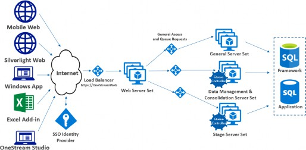
Figure 14.1
Server sets are defined in the Application Server Configuration File in the environment. It is important to ensure that the proper Application Servers are assigned to the proper server set definition in the Application Server Configuration File to allow for the optimal processing of queued tasks in the environment. For example, all of the servers that handle Stage activities would be grouped into a Stage Server set, and all of the servers that handle Consolidation and data management activities would be grouped into a Data Management and Consolidation Server set (See Figure 14.1).
Within the Application Server Configuration File, the Task Load Balancing settings (see Figure 14.2) define the default settings for Task Load Balancing for larger jobs like Consolidation and data management. Application Servers utilize queuing and smart load balancing to run that task on the appropriate Application Server. Task queueing and smart load balancing will prevent more than one processor-intensive task from running on the same server at the same time. When an asynchronous task is started (e.g., a task that uses the progress bar), it can be initialized in a Queued state before it starts work in its Running state.
The queued state uses very little Application Server resources. The algorithm keeps the task in the Queued state until all other queueable tasks have been completed on that Application Server, or until the CPU is low enough to run the task. Examples of asynchronous processes would be any data management job, any Consolidation activity, and Stage activities (Load and Transform, Validate, Load Cube).
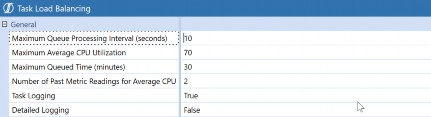
Figure 14.2
Performance Tuning I
User Concurrency (General Application Server Requirements)
The general Application Server is used to process User logons to the OneStream Application, general User navigation, Dashboards, Cube View execution, and reporting. The tasks that are executed on the general Application Server are mostly single-threaded in nature, which means that when a User executes a process on the general Application Server, the User will hold onto a single CPU available on the general Application Server until the process has completed. As a rule, a general Application Server will allow for up to 4.5 concurrent Users per CPU. It is recommended to have 16 logical CPUs available for every 75 concurrent Users in the system to support the general activity load with Users running reporting and navigation in the system.
As more Users access the system concurrently – and run Reports, Dashboards, Report books, etc. – it may be necessary to add additional general Application Servers to the environment to support User concurrency. OneStream is horizontally scalable, and as more Users access the system, additional general Application Servers can be added to the environment to support the additional User concurrency.
There are also some other factors that will have an impact on the general Application Server performance:
Data Unit Size – a typical multi-dimensional Cube model with roughly 250,000 records at the top Parent will allow for roughly 4.5 concurrent Users per CPU. As the Data Unit size increases in the application, the amount of time it takes for a single User to retrieve data will increase and, therefore, will result in a decrease in the number of concurrent Users supported per CPU. It is important that there are enough general Application Server CPUs in the environment to support the User concurrency in the system for an optimal User Experience.
Additional MarketPlace Solutions – as additional MarketPlace Solutions are added to the system – such as Account Reconciliation, Planning, and Task Manager – this will add additional User concurrency to the system.
Multiple Applications being accessed in a Single Environment – if there are multiple applications being simultaneously accessed in a single hardware environment infrastructure, this will account for additional User concurrency in the environment.
Performance Tuning I › User Concurrency (General Application Server Requirements)
Memory Requirements on General Application Servers with Multiple Applications and/or Large Metadata Model Applications
For customers with large analytic models, it is important to make sure that each general Application Server in the environment has enough available memory for the non-analytic memory cache to support the following:
Workflow Cache
Metadata Cache
Temporary Processing Caches
Analytic Cache Overflow (OneStream Memory Manager Latency)
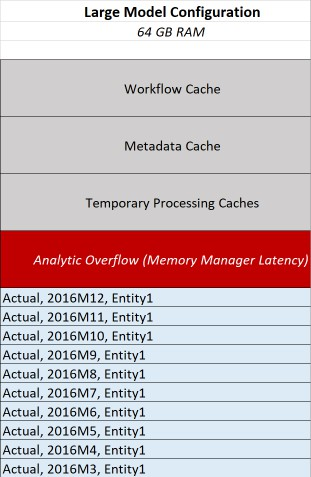
Figure 14.3
OneStream applications that have complex Workflow requirements, and complex metadata requirements, will require additional RAM on the Application Servers to support this requirement. It is very important that the Application Servers have enough available RAM – in reserve – to allow OneStream to handle analytic overflow while waiting for the memory manager to clear analytic cache items beyond the cache limit. This value is configured in the Application Server Configuration File under the Cache settings as seen in the image below:
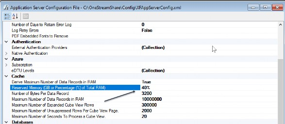
Figure 14.4
The recommendation is to set the Reserved Memory value to 40% as a standard setting. This setting, along with appropriate memory resources, will be required to properly handle memory management within the .NET memory manager on the Application Server. An indication that this setting might need to be adjusted is if memory in use on the Application Server is close to the maximum amount of memory available, and there are not a lot of memory manager events being written to the error log on the system. A memory manager event example would be the following:
Description: The Data Cache Memory Manager removed Data Units from the cache. Initially there were 1,110 Data Units and 15,850,652 records, and the largest Data Unit contained 617,401 records. Afterwards there were 93 Data Units and 7,832,286 records, and the largest Data Unit contained 617,401 records.
Error Level: Information Tier: AppServer
Performance Tuning I › User Concurrency (General Application Server Requirements)
Final Notes on General Application Server
It is important to have enough general Application Servers in the environment to support the concurrent User community. The OneStream Administrator will want to monitor the number of Users in the system concurrently, and add additional general Application Servers to the environment appropriately.
Performance Tuning I
Stage Application Server Performance
Within the Stage Engine in OneStream, there are a few steps that are performed to initially process data that is brought into the staging area. During the initial process of “Load and Transform,” there are multiple sub-steps that are performed, including parsing the source data, executing Transformation Rules, deleting data from the Stage tables, and posting data to the Stage tables.
Each of these steps can be individually performance-tuned to improve the overall task time.
Performance Tuning I › Stage Application Server Performance
Adjusting Workflow Cache Page Size
When importing source data into the Stage Engine in OneStream, data is brought into a data table in memory on the Stage Application Server for processing. The size of the data table is based on the cache page size settings that are defined within the import input channel of the Workflow. The settings define how large the pages are for multi-threading during the load and transform process.
The cache page settings define the size of the cached pages and the maximum number of cached pages in memory. If you are importing a smaller number of records into the Stage Engine (for example, 200,000), the default settings (20,000 Cache Page Size, and 200 Cache Pages in Memory Limit) will be sufficient, as this will allow for up to a total of 4 million records to be processed in RAM on the Application Server. In this example, the Workflow settings would generate 10 data pages in memory.
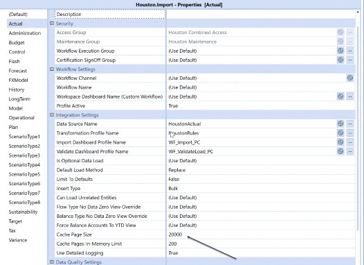
Figure 14.5
If the cache page size is set to a small number such as 2,000, and the cache pages in memory limit is increased to 2,000 – which will still allow for 4 million records to process in memory (2,000 x 2,000) – it will actually cause a decrease in performance as the number of pages to process in memory will be much larger. There will also be an opportunity for SQL Server Deadlock Issues to occur, which will reduce the efficiency of the process. Below is an example of where the cache page size is too small and results in many data pages being generated in memory on the Stage Application Server (72 pages in this example).
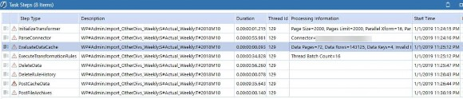
Figure 14.6
For Large Source Datasets (2 million Source Data Records), the Workflow Profile cache page size and maximum number of cache pages in memory should be adjusted to accommodate the full data record set; they should provide large enough cache pages for efficient processing on the Application Server. For example, if processing a 2 million record source dataset, the Workflow Profile cache page size should be adjusted to 100,000 and the Cache Pages in Memory Limit set to 200 allowing for up to 20 million records in memory.
If the cache page size is not large enough to accommodate the Source Data Record set, the process will begin to write the data records out to temp files on the disk on the Application Server for processing, which is inefficient and will result in much longer processing times.
The page cache settings should be configured where the page cache size and number of pages will always accommodate the largest file size that would be imported into the Workflow Profile.
Performance Tuning I › Stage Application Server Performance
Understanding Transformation Rule Performance
The performance of the Execution of Transformation Rules in the load and transform process is dependent on the types of Transformation Rules used within the Transformation Rule profile assigned to the Workflow Profile. Each type of Transformation Rule will have an associated processing cost associated with it. Each of the Transformation Rule processing types that are available has been broken up by cost, below.
Performance Tuning I › Stage Application Server Performance › Understanding Transformation Rule Performance
Low Processing Cost Transformation Rule Types
These Transformation Rule types require a simple update and pass through to the database.
Performance Tuning I › Stage Application Server Performance › Understanding Transformation Rule Performance › Low Processing Cost Transformation Rule Types
Map One to One
o Source Value → Target Value
Table Join/Update Query
Performance Tuning I › Stage Application Server Performance › Understanding Transformation Rule Performance › Low Processing Cost Transformation Rule Types
Map Composite
A#[199?-???*]:E#[Texas]
o Performs a pattern match, based on the first condition, and then verifies the second Dimension condition. In this example, it would pattern match on the Account ? and then would check for the results that contain Texas
Performance Tuning I › Stage Application Server Performance › Understanding Transformation Rule Performance › Low Processing Cost Transformation Rule Types
Map Range
Range xxxx,yyyy→ TargetExecutes an UPDATE SQL Statement with a BETWEEN clause as the main criteria.
Performance Tuning I › Stage Application Server Performance › Understanding Transformation Rule Performance › Low Processing Cost Transformation Rule Types
Map List
List (xx,yy,xx)→ Target
o Executes an UPDATE SQL Statement with a IN(xx,yy,zz) clause as the main criteria.
Performance Tuning I › Stage Application Server Performance › Understanding Transformation Rule Performance › Low Processing Cost Transformation Rule Types
Map Mask (One Sided *)
Mask 12*→ Target
o Executes an UPDATE SQL Statement with a (Like %) clause as the main criteria.
Performance Tuning I › Stage Application Server Performance › Understanding Transformation Rule Performance › Low Processing Cost Transformation Rule Types
Map Mask (* to *)
*→*Executes an UPDATE SQL Statement that passes the source value as the target value.
Performance Tuning I › Stage Application Server Performance › Understanding Transformation Rule Performance
Low/Medium Process Cost Transformation Rule Types
This rule type requires a simple update and passes through to the database. However, masking queries must use table scans, which can hurt performance on large record volumes.
Performance Tuning I › Stage Application Server Performance › Understanding Transformation Rule Performance › Low/Medium Process Cost Transformation Rule Types
Map Mask (One Sided ?)
Mask 12??56→ Target
o Executes an UPDATE SQL statement with a (Like 12??56) clause as the main criteria. This forces the Data Server to use a pattern match, which can be slow on large record volumes.
A performance tip for this rule type is to keep the total number of place holders (?) to a minimum. The more place holders that are in each statement, the longer it will take the Database Server to process the mask rule.
Performance Tuning I › Stage Application Server Performance › Understanding Transformation Rule Performance
Transformation Rule Types with very high processing costs
These rule types are required to return a record set with all Dimension fields back to the Stage Application Server in order to perform the conditional mapping process. This causes a large amount of data transfer and memory utilization to be performed.
Performance Tuning I › Stage Application Server Performance › Understanding Transformation Rule Performance › Transformation Rule Types with very high processing costs
Map Range (Conditional)
Range xxxx,yyyy→ #Script
o Executes a SQL statement that pulls ALL Dimension fields from a worktable with a BETWEEN clause as the main criteria, and passes the records back to the Application Server. This is required for conditional processing. After conditional processing is complete, individual update statements are sent to the Database Server as part of a record set update process.
Performance Tuning I › Stage Application Server Performance › Understanding Transformation Rule Performance › Transformation Rule Types with very high processing costs
Map List (Conditional)
List (xx,yy,zz)→ #Script
o Executes a SQL Statement that pulls ALL Dimension fields from worktable with a IN(xx,yy,zz) clause as the main criteria and passes records back to the Application Server. This is required for conditional processing. After conditional processing is complete, individual update statements are set to the Database Server as part of a record set update process.
Performance Tuning I › Stage Application Server Performance › Understanding Transformation Rule Performance › Transformation Rule Types with very high processing costs
Map Mask (Two-Sided – Source Values used to Derive Target Values)
Mask 12*→ Target*Executes a SQL Statement that pulls only the fields for the specified Dimension using a LIKE clause as the main criteria and passes the records back to the Application Server. This is required in order to use the source value to derive the target value. After conditional processing is complete, individual UPDATE statements are sent to the Database Server as part of a record set update process.
Performance Tuning I › Stage Application Server Performance › Understanding Transformation Rule Performance › Transformation Rule Types with very high processing costs
Map Mask (Conditional)
Mask 12*→ #ScriptExecutes a SQL Statement that pulls ALL Dimension fields from worktable with a LIKE clause as the main criteria and passes the records back to the Application Server. This is required for conditional processing. After conditional processing is complete, individual UPDATE statements are sent to the Data Server as part of a record set update process.
Performance Tuning I › Stage Application Server Performance › Understanding Transformation Rule Performance › Transformation Rule Types with very high processing costs
Derivative
Executes a SQL statement that pulls ALL Dimension fields from worktable with a LIKE clause as the main criteria and passes the records back to the Application Server. This is required for the Application Server to derive the calculated rows. After the calculate value process is complete, the new records are inserted into the worktables on a one by one basis.
The following performance tips can be implemented for the Transformation Rule types with high processing costs to assist with performance when possible.
Performance Tuning I › Stage Application Server Performance › Understanding Transformation Rule Performance › Transformation Rule Types with very high processing costs
Map Range (Conditional)
Keep conditional ranges restrictive. Rather than using one large range (0000 to 9999), break the range up into multiple smaller rule blocks (0000 to 1000), (1001 to 2000), etc. This will keep memory utilization optimal, and the rules will process faster.
Performance Tuning I › Stage Application Server Performance › Understanding Transformation Rule Performance › Transformation Rule Types with very high processing costs
Map List (Conditional)
Keep List restrictive. Rather than using one large list that could return a large volume of records, break the list into multiple smaller lists. This will keep memory utilization optimal, and the rules will process faster.
Performance Tuning I › Stage Application Server Performance › Understanding Transformation Rule Performance › Transformation Rule Types with very high processing costs
Map Mask (Two-Sided – Source Values used to Derive Target Values)
Map Mask (Conditional)
o Keep Mask criteria restrictive. Never use a * without any other criteria in the rule definition. This can cause a very large volume of records to be brought back to the Application Server. Use criteria such as (1*, 2*, 3* or A*, B*, C*) to limit each query to a small chunk of what you need to map. This will keep memory utilization optimal, and the rules will process faster.
The execution of Transformation Rules during the “Load and Transform” step of the Workflow process is heavily multi-threaded and can be processor-intensive on the Application Server. During this process, it is normal to see the CPU on the Application Server increase in utilization as the system will use 16 threads for processing (all the processing occurs on the Application Server).
Performance Tuning I › Stage Application Server Performance
Increasing Delete Performance
Once the data has been successfully parsed, and Transformation Rules have been successfully applied to transform the source data to the appropriate target Members, any data that had existed previously for the Workflow Data Unit needs to be deleted from the Stage tables.
With large datasets, this step of the load and transform operation will need to remove a large amount of data from the Stage table. If this step of the process is taking a large amount of time to complete, there are a few available load options within OneStream that can assist with performance improvement.
Performance Tuning I › Stage Application Server Performance › Increasing Delete Performance
Replace Background (All Time, All Source IDs)
Replaces all Workflow Units (individual period within the selected year and Scenario combination for a particular Workflow Profile) in the selected Workflow View and all Source IDs in a background thread while the new file parses or connector execution is running. The delete is performed while the parse is performed.
| Note: This load method must always be used to delete ALL Source IDs. If the Workflow uses multiple Source IDs for partial replacement during a load, this method cannot be used. |
This method can be used for monthly input frequencies.
Performance Tuning I › Stage Application Server Performance › Increasing Delete Performance
Replace (All Time)
Replaces all Workflow Units in the selected Workflow View (if multi-period). Forces a replacement of all time values in a multi-period Workflow view.
Performance Tuning I › Stage Application Server Performance
Understanding Load Cube Performance
Once the data has been successfully loaded and transformed and validated, the data is then loaded to the Cube. The load Cube step of the Stage Workflow process moves the data from the Stage tables in the application database into the data record tables in the Cube. The first time the Cube is loaded for a Workflow/Scenario/Time combination, the process will perform database record Inserts into the following three database tables in the application database:
Calc Status Table (
CalcStatus)Time Stamp Table (
DataUnitCacheTimeStamp)Data Record Table (
DataRecordxxxxorBinaryDataxxx)
Any subsequent load Cube operations that are performed for the same Workflow/Scenario/Time combination will be more efficient than the initial load Cube as the process will perform database updates on these tables versus inserts, which will be more efficient at the database level.
The load Cube step of the Workflow is also intensive on the network between the Application Server and the Database Server tier in the environment. The process is performing heavily multi-threaded calls per cell between the Application Server and the Database Server, which results in high network pressure between the two servers. It is very important that there is no network latency between the Stage Application Server and the Database Server in order to obtain peak performance with the process.
| Note: If using Microsoft Azure SQL (SAAS), the connection policy for the firewall should be set to Redirect to make sure the Application Server will establish connections directly to the node hosting the database to ensure reduced latency and improved throughput. |
The final option available for increasing the performance of the load Cube step of the Stage process is to adjust the multi-threading settings within the Application Server Configuration File. The default setting is 8 degrees of parallelism, which has been proven to be a baseline for the average customer utilizing OneStream. This may result in many more than 8 simultaneous units of work because OneStream creates ‘sub-units of work’ to provide deeper levels of parallelism.
MaxDegreeofParallelismStage = 8
Limit used for multi-threading when unit of work involves network and database resources.
Controls posting of Stage cache pages to application database.
MaxDegreeofParallelismNoStage = 16
o Limit used for multi-threading when unit of work does not involve network and database resources.
Controls Transformation Rule processing in App Server cache.
Increasing the MaxDegreeofParallelismStage value from 8 to a larger value (such as 12) can result in increased performance in the load Cube process to decrease the total times of the initial load Cube. This should be monitored carefully when increased, to verify that it does not have a negative impact on Database Server performance.
<MultithreadingSettings>
<MaxDegreeOfParallelism>8</MaxDegreeOfParallelism>
<MaxDegreeOfParallelismNoSQL>16</MaxDegreeOfParallelismNoSQL>
<MaxDegreeOfParallelismStage>8</MaxDegreeOfParallelismStage>
<MaxDegreeOfParallelismStageNoSQL>16</MaxDegreeOfParallelismStageNoSQL>Performance Tuning I › Stage Application Server Performance
Analytic Blend Considerations
Analytic Blend is used to report on large volumes of transactional data that are not appropriate to store in the traditional financial Cube. To analyze data by invoice, a standard Cube would require metadata to store the data records. In a short period of time, most of the invoice metadata would become superfluous because of the transactional nature of the data.
Analytic Blend processing occurs on the Stage Application Servers in the environment by default; however, by utilizing the BI Blend settings on the Workflow, it can be assigned to run on a specific Application Server or group of servers. There are two main ways to execute the processing of Analytic Blend within OneStream.
Performance Tuning I › Stage Application Server Performance › Analytic Blend Considerations
Overnight Batch Jobs
Run via Data Management to populate the Analytic Blend database table with transactional data for reporting.
Appropriate for large Analytic Blend implementations (millions of records generated).
Performance Tuning I › Stage Application Server Performance › Analytic Blend Considerations
Interactive Workflow
Analytic Blend runs interactively by the User via in-line Workflow tasks. Users access the Workflow as they normally do, and execute Load and Transform to populate the Analytic Blend database table.
Appropriate for small Analytic Blend tasks.
It is important to design the Analytic Blend process to be run appropriately, based on the volumes of data that will be processed. If there is a large data warehouse that contains the transactional detail information that populates the Analytic Blend tables, this should be scheduled to run as a data management job nightly to populate the tables for the End-Users to report on the next day.
Performance Tuning I › Stage Application Server Performance
Final Notes on Stage Server
For customers with large data volumes (500,000 or more records, for example) and where the Stage processing takes more than 15-20 minutes to complete processing, it is recommended to have dedicated Stage Application Servers in the environment. The standard OneStream implementation will have both the Stage role and the general role shared, as Stage loads are only performed for a small window of the month. If Stage loads are performed multiple times a day, and are running for long periods of time, it is recommended to have a dedicated Stage Application Server for processing.
Performance Tuning I
Consolidation Application Server Performance
Consolidation Application Servers are the heart of the financial engine in the OneStream environment. When a Consolidation is executed within OneStream, the engine will multi-thread the operation as much as possible to obtain optimal performance and execute the process as efficiently as possible. In order to achieve this, the server will use all the CPUs available to it to multi-thread the calculations being performed at the Base level Entities and continue up the Entity hierarchy to the top-level Parents. It is normal behavior for the CPU utilization on the server to reach 99% during the Consolidation operation, as it is using all the resources available to multi-thread the process efficiently. As the Consolidation reaches the upper-level Parents in the Entity hierarchy, the CPU utilization will begin to decrease as there is less opportunity for multi-threading (since the data is consolidated to the top-level Parent).
Performance Tuning I › Consolidation Application Server Performance
Understanding Consolidation Application Server Performance
Within an OneStream Application, there are numerous things that can affect the performance of the Consolidation.
Formulas within the application (Cube Business Rules, Member Formulas)
Metadata structure
Deep hierarchies drive up Consolidation times due to the large number of intermediate Parent Entities.
Data Unit Size (Cube, Entity, Parent, Cons, Scenario, Time, View)
Clock Speed of the CPU on the Consolidation Server
3.7 GHz chips perform a Consolidation two times faster than 2.0 GHz chips.
Parallelism is limited on Parent Entities; faster processors allow for Parent calculations to complete faster.
There are also multi-threading settings contained in the Application Server Configuration File that are available for performance tuning for the Consolidation Engine.
MaxDegreeofParallelism = 8
Limit used for multi-threading when unit of work involves network and database resources.
Overrides all other Consolidation thread settings.
MaxDegreeofParallelismNoSQL = 16
o Limit used for multi-threading when unit of work does not involve network and database resources.
NumThreadsForAggregatingChildEntities= 8
Controls the number of primary units of work that are processed in parallel.
Important because each primary unit of work will invoke nested threads, as sub-units of work, based on this value.
Changing this value will have a large impact on parallelism.
NumThreadsForFillingDataCache = 8
NumThreadsForFillingDataBuffer = 8
NumThreadsForSetDataBuffer = 8
NumThreadsForSetDataCells = 8
NumThreadsForClearData = 8Primarily impacts how the Consolidation Engine reads/writes data to the database (controls pressure on network transport and database storage).
UseMultithreadingForDataMgmt = true UseMultithreadingForMemberFormulas = true UseMultithreadingForConsolidatingSiblings = true
UseMultithreadingForDataBufferConversion = true UseMultithreadingForDataCacheAggregation = trueOn and Off settings for the use of multi-threading in the Consolidation Engine.
When should multi-threading values be modified in the Application Server Configuration File? There are a few instances when these values could be adjusted in the environment to increase performance.
Your analytic model has created too much or too little parallelism for the default values in the configuration file to be effective.
Your system resources are not high enough to handle the throughput required for the default parallelism values.
The best indicator for evaluating parallel processing utilization is the utilization percentage of the CPU on the Application Servers in the environment. If there is too little CPU utilization, it means the system may perform faster with higher parallelism values. The recommendation in this instance would be to increase the multi-threading values and then perform a strict test to see if greater throughput is possible.
If there is too much CPU utilization, this can mean that a single process is consuming too many resources and will hurt the scaling of the system. In this instance, there is the option to decrease the threading to keep more resources available for multiple Users (it is much worse to overload a server than to reduce threading and accept slower processing times). There is also the option to increase system resources (CPU, RAM, network bandwidth, database resources), but this does require monitoring as adding CPU utilization or more Application Servers will lead to additional transport and storage pressure between the Application Servers and the Database Server.
Figure 14.7 shows the impact of increasing threads in the environment and the subsequent effect on concurrent network traffic and concurrent database operations.
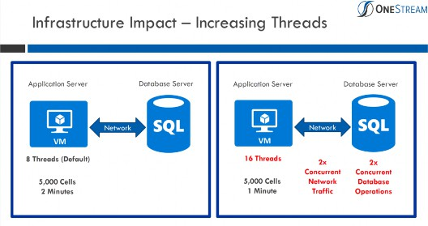
Figure 14.7
Performance Tuning I › Consolidation Application Server Performance
Tools Available
When a Consolidation operation is running slower than would be expected, there are a few tools available to diagnose what could be contributing to the slow performance.
Long-Running Formulas Debug Option within the Application Server Configuration File. A formula that is running for 3 to 5 seconds or more is something that should be investigated; this is a very long amount of time for a formula to compute.
This setting allows the system to write to the error log any formulas that – when the Consolidation is run – take longer than the numeric value specified to complete processing.
o Located in the XFAppServerConfig.xml file under the multi-threading settings section of the configuration file.
Requires IISRESET on all Application Servers for change to take effect.
<NumSecondsBeforeLoggingSlowFormulas>5</NumSecondsBeforeLogg ingSlowFormulas>
Application Analysis Reports are available in the Standard Application Reports (available on MarketPlace).
Reports provide analysis of the Dimension statistics, formula statistics, data statistics, and Data Unit statistics. These Reports are discussed in further detail later in this chapter.
Performance Tuning I
Dedicated Data Management Server
For certain implementations of OneStream, it may be necessary to have dedicated data management Application Servers. These servers typically have more hardware resources available for processing. The dedicated Data Management Server is useful for the following scenarios:
Large, long-running batch jobs that run on a schedule.
Large, long-running Consolidation jobs that run on a schedule.
Large Analytic Blend processing that runs on a schedule during off-hours to prepare the data for the following morning.
These Data Management Servers can be specified explicitly in a data management sequence to direct the long-running tasks to these servers. As such, they won’t affect the general User community of Users available for ad-hoc small data management jobs.
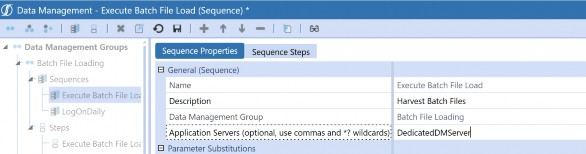
Figure 14.8
The dedicated Data Management Server can also be used for processing Analytic Blend jobs by specifying the server in the Analytic Blend performance controls in the BI Blend Parameters of the Workflow Profile.
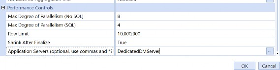
Figure 14.9
Performance Tuning I
Tools Available for Understanding OneStream Infrastructure and Resource Utilization
There are a couple of tools that are available for understanding the OneStream infrastructure that is in place, and the utilization of each of the servers in the environment. Within System Tools, in the OneStream Windows application, there is the Environment Tool, which is designed to give both
IT and Power Users a way to manage and optimize their applications and the environment. Using the environment page, Users can monitor the environment, isolate bottlenecks, look at Web and Application Server configuration properties, and also view collected environment metrics.
The Diagnostics 123 MarketPlace solution is another solution that is available for system Administrators to monitor and diagnose overall environment and task health and performance. Diagnostics 123 provides many of the same features available in the Environment Tool, but in a different viewable format (PDF printable Reports).
Performance Tuning I › Tools Available for Understanding OneStream Infrastructure and Resource Utilization
Environment Tool
The Environment Tool can be accessed within the OneStream Windows App only, and is available by choosing System > Tools > Environment.
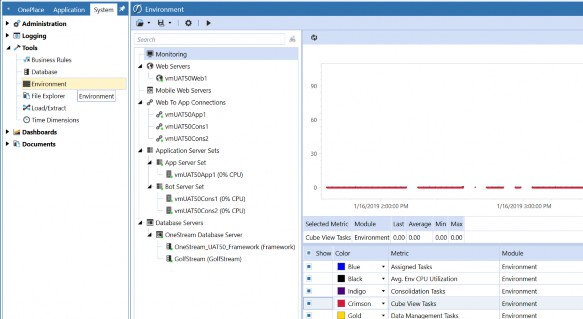
Figure 14.10
The key feature here is the ability to perform real-time monitoring of the environment without having to login to each server in the environment to collect metric data.
For example, you can view (in real-time) the number of running tasks on a server, the average CPU utilization of a server, and the amount of RAM being utilized on an Application Server. You can also see how many Application Servers are contained in the environment in each defined server set, and what their corresponding roles are (and what their hardware resources are, as well). This is useful for validating the number of resources being utilized on a server at a period of time; this information is captured and stored in the OneStream Framework Database, based on the Environment Monitoring settings, configured in the Application Server Configuration File for the environment.
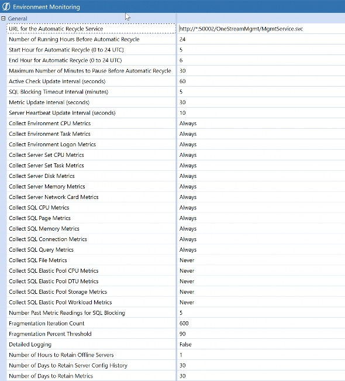
Figure 14.11
It is recommended to set the metrics settings to Always, to allow the environment to always capture the data and record it to the framework database to be retained for analysis as necessary.
After making appropriate changes to the environment monitoring settings, in the Application Server Configuration File, the Application Servers in the environment will need to be restarted for the changes to take effect and begin logging the metric data to the framework database to be utilized within the tool.
The following is an outline of the Environment Tool and what is available:
Web Servers
This section of the tool will list all Web Servers in the environment.
Lists the web to app connections defined in the Web Server Configuration File in the environment.
Displays the audit of changes made to the Web Server Configuration File.
Web to App Server connections
This section of the tool will list all connections being made between the Web Server(s) and each Application Server in the environment.
It allows the Administrator to pause or resume a specific connection to an Application Server.
Will display a red icon when the connection is not successful between the Web and Application Servers.
Application Server sets
Displays all server sets defined in the Application Server Configuration File in the environment and their corresponding defined behaviors.
Allows the contents of the Application Server Configuration File to be viewed.
Allows the current hardware of the Application Server(s) to be viewed.
Displays the audit of Application Server Configuration File changes.
Will display a red X icon when a server is offline in the environment.
Allows for recycling of the IIS application pool.
Allows the Application Servers to be paused from accepting new job requests.
Database Servers
Allows for performance monitoring of the SQL Server Database Server.
Displays hardware information and Application Server Configuration File information and audit.
Lists each OneStream application database and its corresponding schema name.
The heart of the System Tool is its monitoring capability. It can perform both real-time monitoring of performance metrics and also look at historical metrics captured in the framework database. The User is able to select the desired KPIs to monitor from the environment settings, and then display these metrics in a graph for viewing.
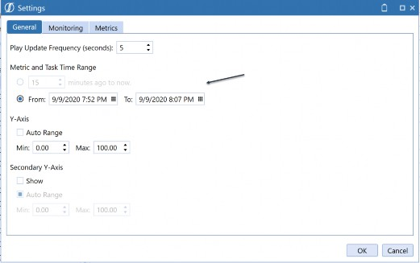
Figure 14.12
Selecting From allows the User to choose a date range to view the captured metrics.
Choosing the Minutes ago to now radio button allows the User to view the selected metrics, in real-time, in the environment.
The Monitoring tab is then used to define what Application Servers, Database Servers, or server set metrics will be collected for review. Each server that will be monitored should be moved to the Result List to be included in the graph results.
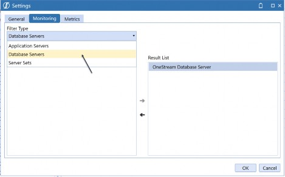
Figure 14.13
Lastly, the Metrics tab defines what metrics will be included in the resulting graph that is generated.
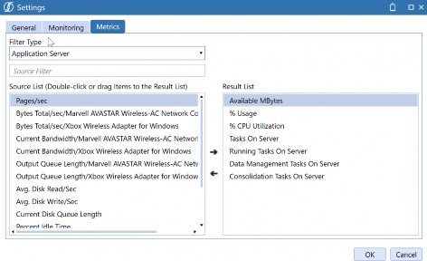
Figure 14.14
After setting the appropriate settings, the User can then go to the Monitoring item and hit the Play button in the top toolbar to display the results, as shown in the image below.
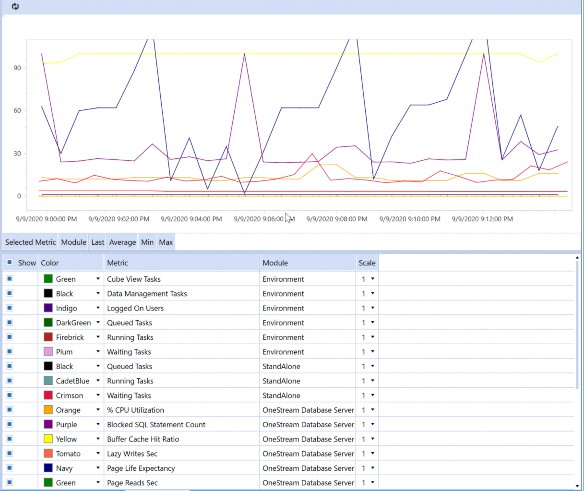
Figure 14.15
The User can choose to use the “Show” buttons to add and remove metrics from the graph and refresh as necessary. The graph also allows for the ability to zoom by dragging the cursor over the graph and using the sub-menu items available:
Zoom In Time Range
This will drill further down into the graph to additional detail by hour, minute, and second.
Tasks Running Within Time Range
This will query the task activity based on the time range selected, and return any tasks that were running during this time to the End-User. The User can then drill down further into each running task as necessary.
Tasks Queued Within Time Range
This will query the task activity based on the time range selected, and return any tasks that were in a queued state.
As you can see, this is a very useful tool for OneStream Administrators. They are able to see many key performance indicators in the environment. This is a great tool for Administrators when diagnosing performance issues (e.g., server issues, or a large number of logged on Users on a regular basis at a certain time, or multiple tasks running on a single server at one time, and so on).
Performance Tuning I › Tools Available for Understanding OneStream Infrastructure and Resource Utilization
Diagnostics 123
As touched upon above, another tool that is available for system Administrators to monitor and diagnose overall environment and performance is the Diagnostics 123 MarketPlace solution. This was introduced as a solution – on the MarketPlace – prior to the Environment Tool being built into the platform. Accordingly, it includes many of the features available in the Environment Tool, then produces Reports in a PDF format for the Administrator.
Diagnostics 123 is broken up into three main pages:
Environment Analysis
Task Analysis
Live Monitoring
The Environment Analysis page is the first page to access after setting the Data Unit sample year. It is recommended to set the Data Unit sample year to the last full year that data was loaded for, as it is used to calculate Data Unit sizing for environment analysis.
Environment analysis creates snapshots of the environment hardware state by gathering the information from the environment monitoring features in the software. The snapshots provide details on the Application Servers and Database Server.
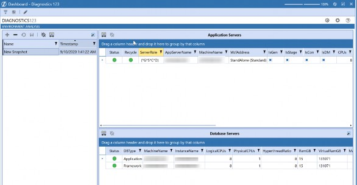
Figure 14.16
The Application Servers table lists each of the Application Servers contained in the environment as well as additional information
Role Assignment
Number of CPUs
RAM
Application Server Configuration File settings (Parallelism, Reserved Memory Setting, etc.)
CPUMipScore
This is important to note as it shows how fast the CPUs are on the server. The higher the MIP recorded score, the faster the processors in the
environment. Fast processors are best for Consolidation and Data Management Server roles in the environment.
The Database Servers table lists the Database Server that is currently being used for the application and framework databases in the environment, and corresponding resources.
The Analysis button within the page will perform a resource validation that displays a traffic light Report, based on calculations performed in the solution. This is a great tool to verify that the environment has the appropriate number of general Application Servers and Consolidation Servers based on historical metrics of supporting 4.5 concurrent Users per CPU before including any deflators due to large Data Units and shared server roles.
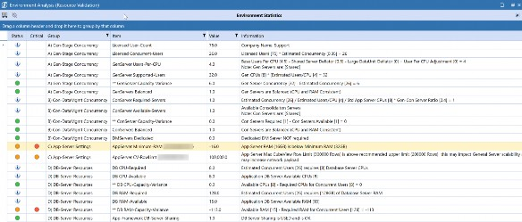
Figure 14.17
There are also some additional analysis Reports that are available for viewing within the environment analysis page:
Large Data Unit Detail Report
This Report will list out the top 200 large Data Units in the application, based on the year set in the settings.
If Data Unit size is getting large (larger than 250,000 records at the top Parent), this will have an impact on the number of concurrent Users that can be supported per CPU in the system. That’s because each User will be holding onto a CPU longer on the general Application Servers to pull back the data in a Cube View Report, and will therefore decrease the number of concurrent Users supported per CPU. This will be an indicator to assist in sizing the appropriate number of general Application Server CPUs for the environment.
Memory Manager Report
This Report displays how often the .NET memory manager executes in the environment to remove the oldest Data Units from the analytic cache in the environment. If the memory manager is executing at a high rate on a daily basis, this is an indication that the servers require additional RAM resources to handle the analytic model and data volumes being processed. An example of these entries can be seen in the OneStream error log below:
Summary: The Data Cache Memory Manager removed Data Units from the cache. Initially there were 2,399 Data Units and 7,984,332 records, and the largest Data Unit contained 357,552 records. Afterwards there were 896 Data Units and 2,475,821 records, and the largest Data Unit contained 168,664 records.
The Task Analysis page facilitates research tasks by concurrency, statistics, and overall counts. This is very useful for viewing daily logins to the environment by module (Windows App, Excel, Studio, API) to view true concurrency in the system over a period of time.
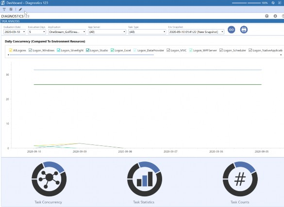
Figure 14.18
The graph displays a line to show the estimated User concurrency and also the maximum supported User concurrency. They can be used as a guide against the total User logons to verify that there are enough general Application Servers in the environment to support the User community.
The Task Concurrency module will display charts showing the number of tasks that were run on a day, by task type, and then allow for drilldown into the graphs to view the data by hour and minute, as well as the individual task in task activity.
Task Statistics display daily runtime statistics by Type (Max,Min,Avg) for the task Type selected. This data can be filtered by Application Servers and by applications.
Task Counts display the total number of daily tasks that were run for a particular task Type. For example, if the User selects Cube View, it will display the total number of Cube View tasks run for a day, and display how many were completed, failed, or cancelled.
The Live Monitoring Module provides environment and task health data over a given timeframe. This is the same functionality that is available in the Environment Tool under Monitoring, but is displayed in an analysis traffic light Report and also a pivot grid. The User is able to set a duration of time to monitor the system and an interval in seconds where the system will capture pre-defined environment metrics and then display them in a traffic light Report. This process is performed via a data management job in the solution to capture the metrics, before writing the results to a Report with explanations.
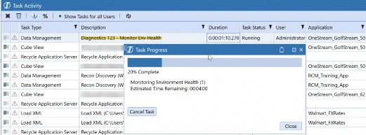
Figure 14.19
When the data management job is complete, the results can be viewed in the Analysis Report, which displays the results captured, and highlights any items that are critical to address in the environment.
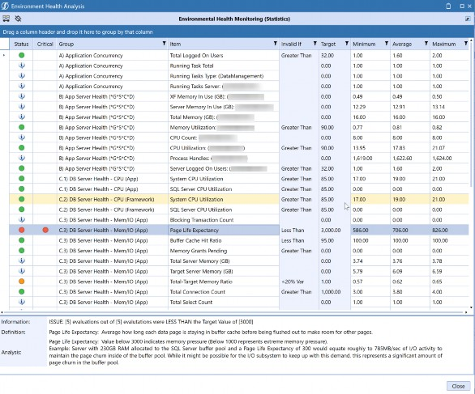
Figure 14.20
The Live Monitoring module also offers a means to monitor a particular task Type and identify the task as unhealthy if it is running for a long period of time (identifying environment resources at that period of time). This can be useful when a process is not responding, and if there is a particular environment resource that is under pressure, which needs to be addressed accordingly.
Performance Tuning I
MarketPlace Solutions (What Application Servers Are Used?)
With the ability to use MarketPlace solutions to further extend the OneStream platform, it is important to understand what Application Servers are used for processing in these solutions. For example, what servers are used to perform a calculation in the Specialty Planning solutions? What servers are used to perform the background tasks for Account Reconciliation? In this segment, we are going to focus on two of the most common solutions (as of writing) that are largely implemented in OneStream environments to extend the platform, and discuss what Application Servers are used to perform tasks in each solution. This will demonstrate the importance of making sure that there are enough hardware resources to support the implementation of additional MarketPlace solutions.
Performance Tuning I › MarketPlace Solutions (What Application Servers Are Used?)
Account Reconciliation
The Account Reconciliation MarketPlace solution uses the exact same data that has already been imported and validated – in Stage – to discover reconciliation items. Account Reconciliation reads the source data from Stage by pulling the data from a different Scenario’s imported trial balance data. The diagram below represents a high-level view of how RCM works with the rest of the OneStream application.
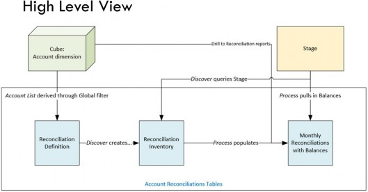
Figure 14.21
When the discover process is executed within the Account Reconciliation definition page, within the solution, it will trigger a data management sequence that calls the RCM_DataMgmtProcess Extender Business Rule to query the Stage data from the source Scenario defined in the RCM Global options. Since this is a data management sequence that is being executed, anytime a discover is performed in the solution, the process will run on a Data Management Server in the environment.
When the Process button is executed within the Account Reconciliation preparer and reviewer page, the RCM_SolutionHelper Dashboard Extender Business Rule runs on a general Application Server in the environment.
The process can also be scheduled to run via a data management sequence – provided with the Account Reconciliation solution – when ensuring that Reconciliation balances are up to date (RCM
Administrators are notified if balances change). This process is run on a Data Management Server in the environment.
Any of the other navigation and processing within Account Reconciliation is performed on the general Application Server in the environment. If Users are seeing a performance issue, it is useful to understand User activity in the system to identify how the general Application Servers are being utilized. There may be a need for additional general Application Servers to be added to the environment to support the implementation of the new solution.
Performance Tuning I › MarketPlace Solutions (What Application Servers Are Used?)
Specialty Planning
Specialty Planning solutions are a group of similar applications created around a common OneStream Relational Blending framework. Each has been configured to focus on a single Specialty Planning subject, including People Planning, Cash Planning, Capital Planning, Thing Planning, and Sales Planning.
Specialty Planning solutions will use the general Application Servers for navigation within the solution Dashboards, but many of the buttons within the register are configured to execute on the Data Management Servers within an environment. For example, the Calculate Plan button – which executes the calculation plans for the items in the register – will execute the process on a Data Management Server in the environment. Since this is a heavily multi-threaded process and can be longer-running, the button within the solution is configured to run this on a Data Management Server rather than a general Application Server. If you find that the calculation executes on a general Application Server in the environment, this can be modified within the button Dashboard Component for the solution within the action items Selection changed server task.
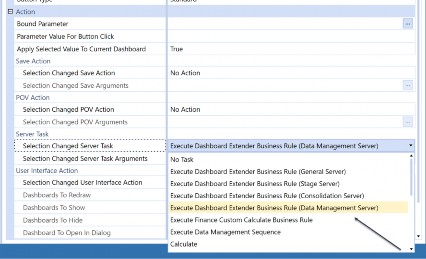
Figure 14.22
This can be useful for Dashboard design inside of the platform to define what server type is used to execute a process for a button.
Performance Tuning I
Managing Changes in a OneStream Environment
Deploying changes to a production environment should be avoided during times of high load and high application activity. Changes to the following types of application artifacts – especially – should not be performed against a production environment experiencing heavy activity:
Business Rules, whether they contain Global functions or not
Confirmation Rules
Metadata, especially when using Member Formulas
Applying changes like this while the production system is under a high level of activity may have a negative impact on servers, and have the potential to cause running processes to produce an error.
Standard environments are recommended to schedule production changes during slow periods or non-work hours. Large environments should consider using pause functionality within the Environment tab to allow activity to wind down. Large environment managers should also consider the MarketPlace solution Process Blocker, which allows for a pause of critical processes to perform maintenance on the system, without having to shut down the entire application. Process Blocker allows current tasks to be completed, while any new requests are queued, allowing the changes to be applied safely and effectively. Once these changes are in place, it is recommended to significantly limit the ability for Users to make such changes during high volume times.
It is key that servers get a chance to recycle for good system memory health. IIS also has an Idle Time-Out setting for our OneStreamAppAppPool. This setting should be set to 0 since OneStream has other settings within the Application Server File under the Environment Monitoring section to recycle IIS. For active, global environments with data management sequences regularly being executed, a recycle of IIS is recommended every 24 hours for these OneStream App Servers.
Performance Tuning I
Infrastructure Resource Planning
Below is a general outline of what to keep in mind for Resource Planning – for high-performance computing – in the OneStream infrastructure:
Critical System Resources.
RAM
Application Servers load the model into memory; more RAM on the Application Servers will reduce the unloading of cache, and will reduce the use of the .NET memory manager executions.
CPU Count
Additional CPUs enable more parallelism and process isolation.
CPU Speed
3.7 GHz processors perform a Consolidation twice as fast as 2.0 GHz processors.
Parallelism is limited on Parent Entities.
Deep hierarchies drive up Consolidation times because they contain a large number of intermediate Parent Entities.
Faster processors enable faster processing of Parent Entities.
Database Server
If the Database Server is underpowered, this will slow down the system, and most performance tuning options are limited.
Database Servers require a large amount of RAM and will enhance performance with large amounts of RAM.
Database Servers should have fast I/O with Solid State Drives (SSD) and high IOPs.
Database Servers need direct and fast network access to Application Servers.
Network Infrastructure
Limited network bandwidth will limit performance tuning options.
10 or 40 Gigabit interconnects perform maximum throughput for high-performance computing.
Performance Tuning I
Conclusion
This chapter outlines some of the tools that are available for properly tuning a OneStream application to meet your customers’ needs. Tuning opportunities exist for each component of OneStream; they help ensure that the overall processing times of End-Users’ daily Workflows are as optimal as possible.
Performance Tuning I
Epilogue
My first User Conference was in May of 2015, at Splash, in Boston, MA.
This was the first time that I was able to personally experience talking with the OneStream customer and partner community, and I really felt the enthusiasm people had for this platform.
The customer and partner community was so enthusiastic about the software – and where it was headed – and about the service that was provided. The last event of the User Conference was at the Heart and Soul of Boston, Fenway Park. Peter Fugere and I were able to go onto the field at Fenway before the Red Sox and Rangers game, and OneStream Software was welcomed by the Red Sox on the video board at the ballpark. Being a HUGE baseball fan, this is something that I will never forget!